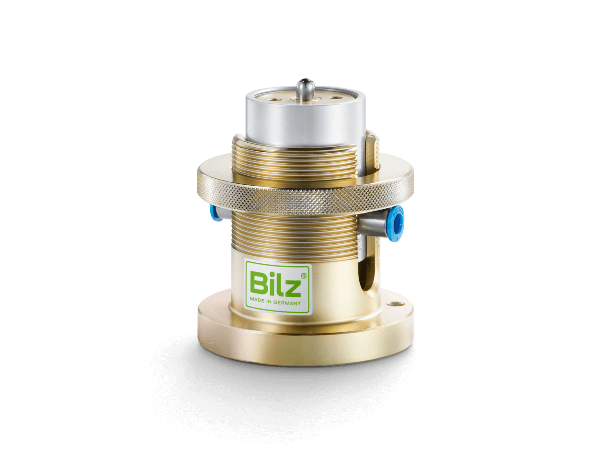

Precyzyjny mechaniczno-pneumatyczny system regulacji poziomu — podwyższona dokładność powrotu do poziomu ±0,01 mm.
MPN-PVM to precyzyjny mechaniczno-pneumatyczny system regulacji poziomu, który automatycznie utrzymuje maszynę w poziomie niezależnie od zmian obciążenia. System zapobiega niedopuszczalnemu ugięciu wibroizolatorów oraz przechyleniu maszyny wywołanym zmianą obciążenia.
W porównaniu ze standardowym MPN-LCV oferuje podwyższoną dokładność powrotu do poziomu ±0,01 mm (±1/100 mm). Opcjonalnie dostępny również z zaworem dławiącym ograniczającym przeregulowanie.
System współpracuje z miechami gumowymi FAEBI i FAEBI-HD oraz poduszkami membranowymi BiAir. Działa czysto mechanicznie i pneumatycznie — bez zasilania elektrycznego.

| Dokładność powrotu do poziomu | ±0,01 mm (±1/100 mm) |
|---|---|
| Zawartość zestawu | 3 zawory regulacyjne wraz z przewodami i złączkami do 4 poduszek pneumatycznych |
| Współpraca z izolatorami | miechy gumowe FAEBI / FAEBI-HD, poduszki membranowe BiAir |
| Zasilanie | sprężone powietrze (bez zasilania elektrycznego) |
| Opcje | zawór dławiący, jednostka przygotowania sprężonego powietrza |
Minimalny układ regulacji składa się z trzech zaworów mechaniczno-pneumatycznych i trzech poduszek pneumatycznych. Przy większej liczbie izolatorów układ nadal pracuje w trzech grupach regulacyjnych (przez równoległe łączenie poduszek), aby nie był statycznie przesztywniony. Dostępne wersje specjalne pod kątem materiału, przepływu, dokładności i siły przywracającej.
Poziom jest stale wykrywany za pomocą popychacza, którego położenie przenoszone jest bezpośrednio na suwak zaworu. Zasilana sprężonym powietrzem poduszka pneumatyczna jest napełniana lub odpowietrzana zgodnie z położeniem suwaka. Poziom zadany ustawia się przez obrót radełkowanego pierścienia nastawczego.
Za pomocą zaworów, przez szybkie napełnianie i odpowietrzanie, ciśnienie powietrza wewnątrz izolatorów jest dostosowywane do bieżącego obciążenia i automatycznie regulowane. Dzięki temu nawet przy zmiennym położeniu środka ciężkości zachowana jest najwyższa stabilność poziomu i skuteczność izolacji.
Układ regulacji poziomu składa się z co najmniej trzech zaworów mechaniczno-pneumatycznych i trzech poduszek pneumatycznych. Jeśli ze względów konstrukcyjnych lub obciążeniowych potrzeba więcej izolatorów, nadal pracuje się z trzema regulowanymi grupami — w przeciwnym razie układ byłby statycznie przesztywniony. Opcjonalnie przed zaworami regulacyjnymi montuje się dodatkową jednostkę przygotowania sprężonego powietrza.
Pomożemy dobrać system MPN-PVM do Twoich wibroizolatorów i maszyn.
Precyzyjny mechaniczno-pneumatyczny system poziomowania MPN-PVM automatycznie utrzymuje maszynę w poziomie na poduszkach pneumatycznych antywibracyjnych BiAir i FAEBI, z podwyższoną dokładnością powrotu do poziomu ±0,01 mm. Kompletny zestaw obejmuje 3 zawory regulacyjne z przewodami i złączkami do 4 poduszek. Oficjalnym przedstawicielem Bilz w Polsce jest firma EKKON z Olsztyna.